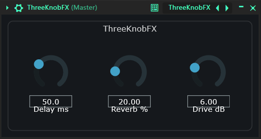
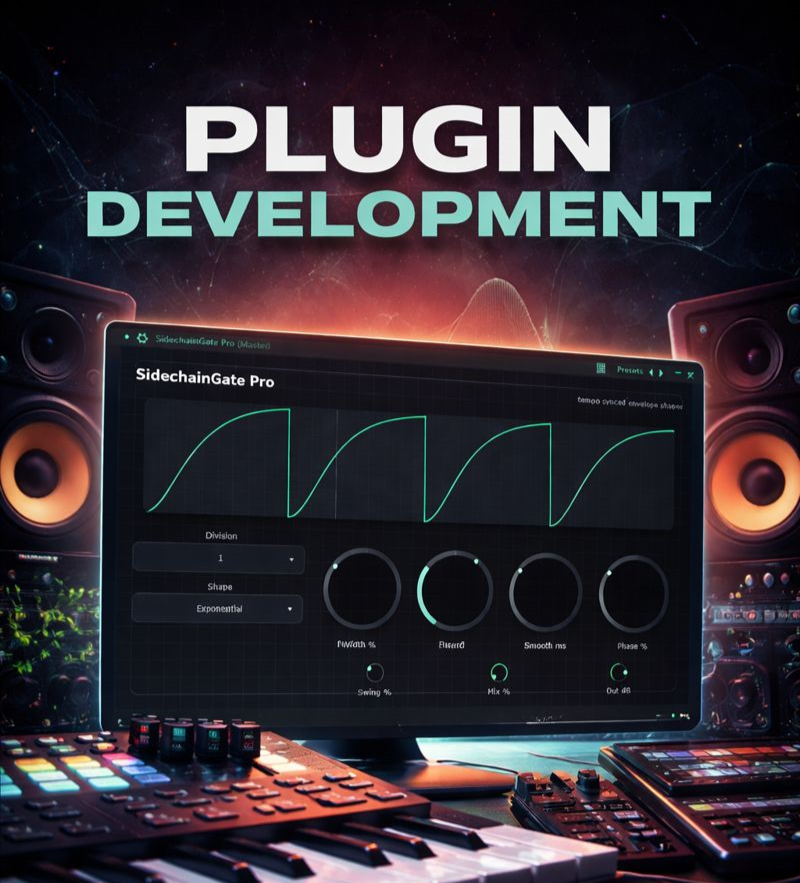
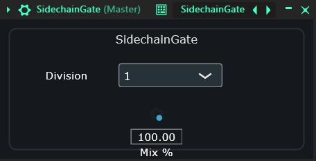
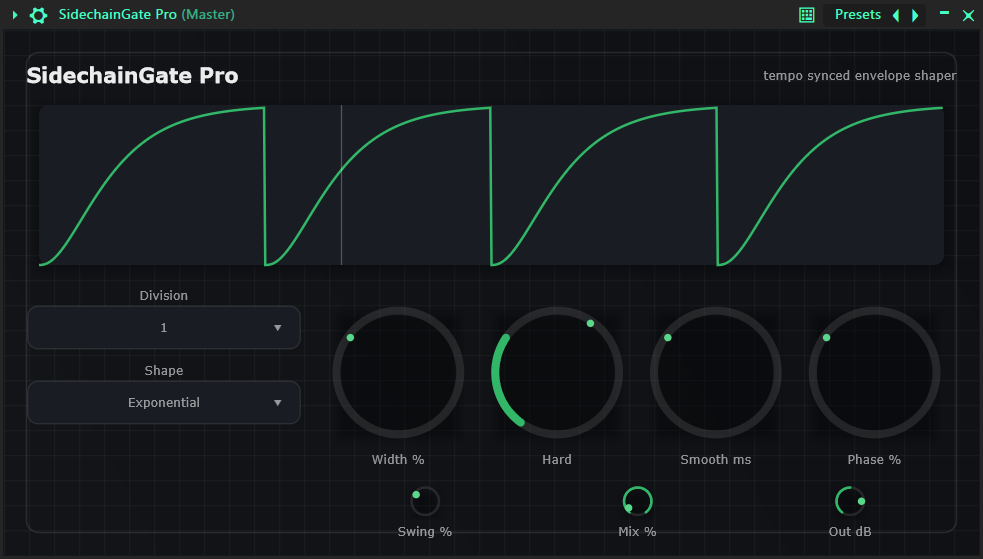

01 — Effect
ThreeKnobFX
Minimales Effekt-Plugin als Einstieg in die Audio-Plugin-Entwicklung.
- Delay in Millisekunden
- Reverb als Wet/Dry-Anteil
- Drive-Verzerrung in Dezibel
JUCE · C++ · VST3 · CMake
Gute Plugins sind teuer. Also habe ich meine eigenen gebaut — mit JUCE, C++ und einer ordentlichen Portion DSP.

Musikproduktion ist eines meiner stärksten kreativen Ventile — ich produziere meine eigenen Tracks in FL Studio von Image-Line. Hochwertige Plugins sind dabei essenziell, aber oft teuer.
Aus der Softwareentwicklung kommend, habe ich mich entschieden, meine eigenen VST3-Plugins zu entwerfen und zu bauen — mit JUCE, C++ und KI-gestützter Entwicklung.
Audio-Plugin-Entwicklung ist komplex. Durch die Kombination aus eigener Coding-Erfahrung und KI-gestützten Workflows konnte ich schneller prototypen, DSP-Konzepte tiefer durchdringen und trotzdem saubere, wartbare Architekturen bauen.

Jedes Plugin war ein Schritt tiefer in die Signalverarbeitung — vom ersten Parameter-Handling bis zum animierten Envelope-Visualizer.

Minimales Effekt-Plugin als Einstieg in die Audio-Plugin-Entwicklung.

Host-synchronisiertes Volume-Gate, inspiriert vom Kickstart-typischen Ducking.

Fortgeschrittener Envelope-Shaper mit visuellem Feedback und feiner Kontrolle.